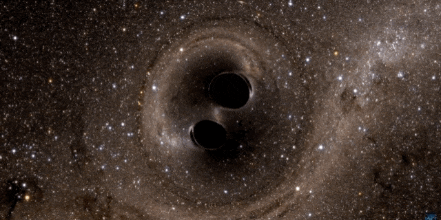
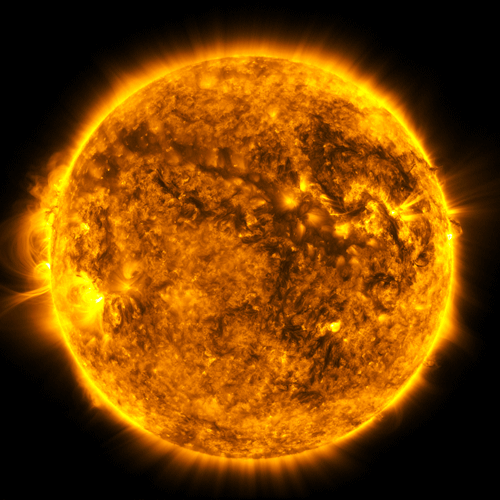
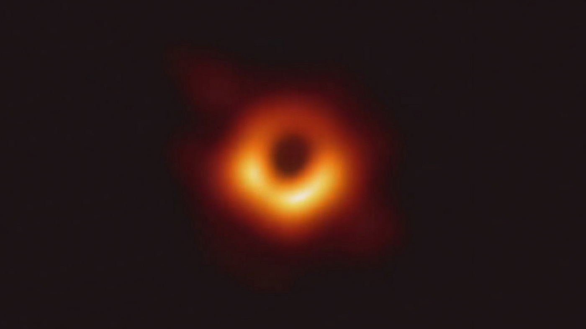
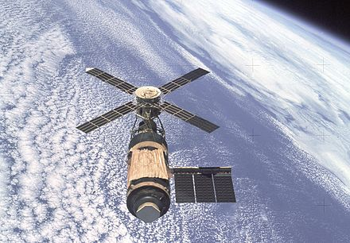
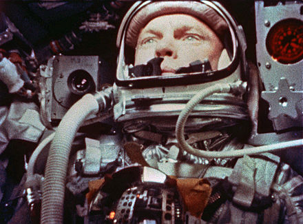

Where Is NASA?

NASA Headquarters is in Washington, D.C. There are 10 NASA centers across the United States. There are also seven smaller NASA work places where they test and study Earth and space. Thousands of people work for NASA! Being an astronaut is probably the best-known job at NASA, but astronauts make up just a small part of the workforce. A lot of engineers and scientists work at NASA. People are doing other jobs, too, like secretaries, writers, lawyers and even teachers.
What Does NASA Do?
NASA does a lot of different things. NASA makes satellites. The satellites help scientists learn more about Earth. NASA sends probes into space. NASA scientists study things in the solar system and even farther away. A new program will send humans to explore the Moon and, one day, Mars. NASA also shares what they learn with others. People who do not work at NASA can use NASA ideas to make new inventions. These new inventions can help make life on Earth better. Do you like science, math and learning new things? Would you like to be an adventurer? Would you like to plan future missions to other planets and outer space? People at NASA work hard to share news about NASA's missions with teachers. Then, teachers can use NASA lessons to teach their students about science, technology, engineering and math.
How did NASA created?
From 1946, the National Advisory Committee for Aeronautics (NACA) had been experimenting with rocket planes such as the supersonic Bell X-1.[14] In the early 1950s, there was challenge to launch an artificial satellite for the International Geophysical Year (1957–58). An effort for this was the American Project Vanguard. After the Soviet launch of the world's first artificial satellite (Sputnik 1) on October 4, 1957, the attention of the United States turned toward its own fledgling space efforts. The US Congress, alarmed by the perceived threat to national security and technological leadership (known as the "Sputnik crisis"), urged immediate and swift action; President Dwight D. Eisenhower and his advisers counseled more deliberate measures. On January 12, 1958, NACA organized a "Special Committee on Space Technology", headed by Guyford Stever.[9] On January 14, 1958, NACA Director Hugh Dryden published "A National Research Program for Space Technology" stating:[15] File:NASA 60th- How It All Began.webmPlay media A short documentary about the beginnings of NASA It is of great urgency and importance to our country both from consideration of our prestige as a nation as well as military necessity that this challenge [Sputnik] be met by an energetic program of research and development for the conquest of space ... It is accordingly proposed that the scientific research be the responsibility of a national civilian agency ... NACA is capable, by rapid extension and expansion of its effort, of providing leadership in space technology.[15]
What are programs of NASA?
Apollo Program
The U.S public's perception of the Soviet lead in the space race (by putting the first man into space) motivated President John F. Kennedy to ask the Congress on May 25, 1961, to commit the federal government to a program to land a man on the Moon by the end of the 1960s, which effectively launched the Apollo program.[44] Apollo was one of the most expensive American scientific programs ever. It cost more than $20 billion in 1960s dollars[45] or an estimated $218 billion in present-day US dollars.[46] (In comparison, the Manhattan Project cost roughly $27.8 billion, accounting for inflation.)[46][47] It used the Saturn rockets as launch vehicles, which were far bigger than the rockets built for previous projects.[48] The spacecraft was also bigger; it had two main parts, the combined command and service module (CSM) and the Apollo Lunar Module (LM). The LM was to be left on the Moon and only the command module (CM) containing the three astronauts would eventually return to Earth.
Skylab
Skylab was the United States' first and only independently built space station.[57] Conceived in 1965 as a workshop to be constructed in space from a spent Saturn IB upper stage, the 169,950 lb (77,088 kg) station was constructed on Earth and launched on May 14, 1973, atop the first two stages of a Saturn V, into a 235-nautical-mile (435 km) orbit inclined at 50° to the equator. Damaged during launch by the loss of its thermal protection and one electricity-generating solar panel, it was repaired to functionality by its first crew. It was occupied for a total of 171 days by 3 successive crews in 1973 and 1974.[57] It included a laboratory for studying the effects of microgravity, and a solar observatory.[57] NASA planned to have a Space Shuttle dock with it, and elevate Skylab to a higher safe altitude, but the Shuttle was not ready for flight before Skylab's re-entry on July 11, 1979.[58]
Space Shuttle program
The Space Shuttle became the major focus of NASA in the late 1970s and the 1980s. Planned as a frequently launchable and mostly reusable vehicle, four Space Shuttle orbiters were built by 1985. The first to launch, Columbia, did so on April 12, 1981,[62] the 20th anniversary of the first known human space flight.[63] Its major components were a spaceplane orbiter with an external fuel tank and two solid-fuel launch rockets at its side. The external tank, which was bigger than the spacecraft itself, was the only major component that was not reused. The shuttle could orbit in altitudes of 185–643 km (115–400 miles)[64] and carry a maximum payload (to low orbit) of 24,400 kg (54,000 lb).[65] Missions could last from 5 to 17 days and crews could be from 2 to 8 astronauts.[64] On 20 missions (1983–98) the Space Shuttle carried Spacelab, designed in cooperation with the European Space Agency (ESA). Spacelab was not designed for independent orbital flight, but remained in the Shuttle's cargo bay as the astronauts entered and left it through an airlock.[66] On June 18, 1983 Sally Ride became the first American woman in space, onboard the Space Shuttle Challenger STS-7 mission. [67] Another famous series of missions were the launch and later successful repair of the Hubble Space Telescope in 1990 and 1993, respectively.